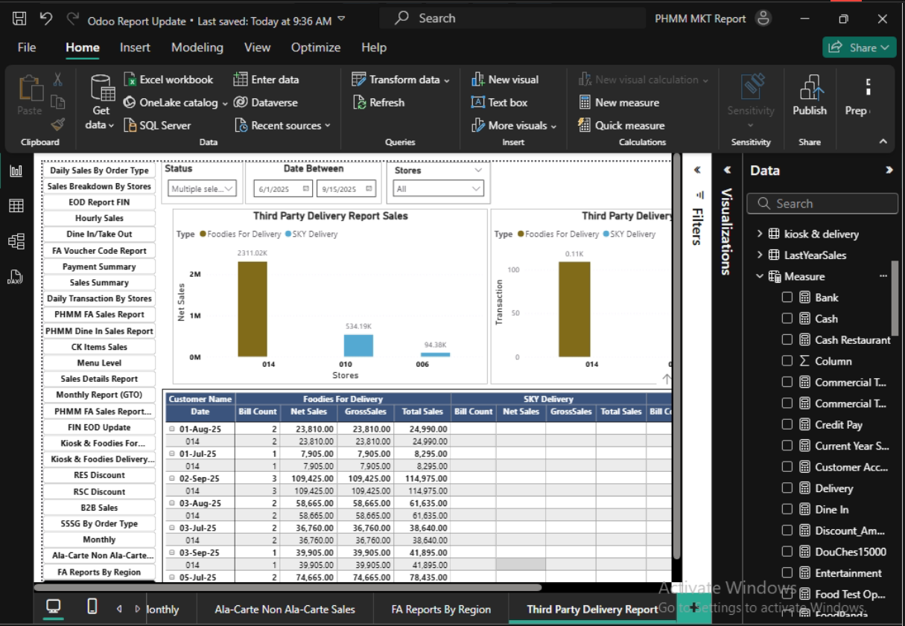
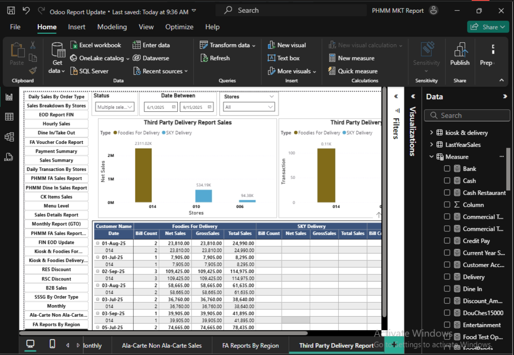

About Me
I am a Senior Data Analyst with 6+ years of experience in retail, banking, and ERP system analysis. I specialize in Power BI dashboards, SQL querying, Odoo ERP integration, SAP reporting, and daily business analysis solutions. I enjoy cleaning complex datasets, solving operational issues, and delivering meaningful insights.
Technical Skills
- Data Visualization: Power BI, Oracle BI Publisher, Report Builder, Tableau
- Databases: Oracle SQL, PostgreSQL, MySQL, MSSQL
- ERP: Odoo ERP, SAP, Pointsoft
- ETL: Pentaho
- Languages: SQL, PLSQL, PHP, HTML, JS, Python
- Cloud & Automation: SharePoint, OneDrive, Power Automate
Projects
1. Retail Sales Performance Dashboard (Power BI)
Developed KPI dashboard integrating SAP sales, POS data, and promotions.
 


2. PostgreSQL → Power BI Integration
Connected Odoo PostgreSQL database to Power BI for real-time reporting.


3. Consolidated Reporting (Odoo + Legacy DB)
Merged SSMS historical data with Odoo using SQL transformations.


Contact
Email: qqhtay2028@gmail.com
Phone: 09796274608
Location: Yangon, Myanmar